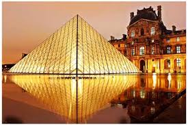
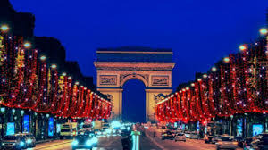
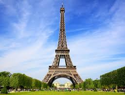
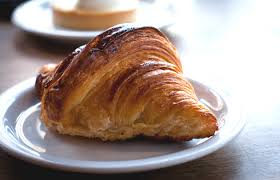

Elle se situe au cœur d'un vaste bassin sédimentaire aux sols fertiles et au climat tempéré, le bassin parisien, sur une boucle de la Seine, entre les confluents de celle-ci avec la Marne et l'Oise. Paris est également le chef-lieu de la région Île-de-France et le centre de la métropole du Grand Paris, créée en 2016. Elle est divisée en arrondissements, comme les villes de Lyon et de Marseille, au nombre de vingt. Administrativement, la ville constitue depuis le 1er janvier 2019 une collectivité à statut particulier nommée « Ville de Paris » (auparavant, elle était à la fois une commune et un département). L'État y dispose de prérogatives particulières exercées par le préfet de police de Paris. La ville a connu de profondes transformations sous le Second Empire dans les décennies 1850 et 1860 à travers d'importants travaux consistant notamment au percement de larges avenues, places et jardins et la construction de nombreux édifices, dirigés par le baron Haussmann. La ville de Paris comptait 2,19 millions d'habitants au 1er janvier 2016. Ses habitants sont appelés parisiens. L'agglomération parisienne s’est largement développée au cours du xxe siècle, rassemblant 10,73 millions d'habitants au 1er janvier 2016, et son aire urbaine (l'agglomération et la couronne périurbaine) comptait 12,57 millions d'habitants. L'agglomération parisienne est ainsi la plus peuplée de France, elle est la quatrième du continent européen et la 32e plus peuplée du monde au 1er janvier 2019. La position de Lutèce, sur l'île aujourd'hui nommée l'île de la Cité, permettant le franchissement du grand fleuve navigable qu'est la Seine par une voie reliant le Nord et le Sud des Gaules, en fait dès l'Antiquité une cité importante, capitale des Parisii, puis lieu de séjour d'un empereur romain. Sa position au centre du territoire contrôlé par les rois francs la fait choisir comme capitale de la France à la place de Tournai. Située au cœur d'un territoire agricole fertile avec un climat humide et doux, Paris devient une des principales villes de France au cours du xe siècle, avec des palais royaux, de riches abbayes et une cathédrale.




La cuisine parisienne est réputée pour ses volailles, que l'on considère comme des spécialités qui étaient autrefois servies à la Cour de Louis XIV de France.
On trouve à Paris, le cochon généreux qui fournit le célèbre jambon de Paris4 (aussi appelé jambon blanc), consommé sous différentes formes ;
autant dans une assiette avec du beurre, que dans un croque-monsieur13.
Dans les pains parisiens, il y a la fameuse baguette, mais aussi le pain Briare et le pain Vexin4.
Côté pâtisseries, il y a le saint-honoré, la tarte Bourdaloue, l'opéra, les financiers, le mille-feuille et la plupart des pâtisseries faites à base de pâte à choux.
Beaucoup de ces desserts, notamment ceux composés de pâte à choux, ont été développés ou inventés dans la Pâtisserie de la rue de la Paix,
du grand chef parisien Marie-Antoine Carême, précurseur du principe de pâtisserie et confiserie14. On peut également citer la brioche de Nanterre.